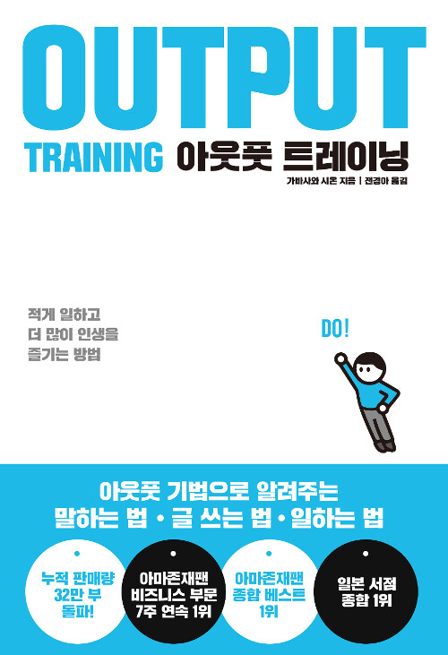

아웃풋 트레이닝
가바사와 시온
[책 소개]
출간되자마자 아마존재팬 종합 1위, 비즈니스 부문 7주 연속 1위를 차지하며 일본을 아웃풋 열풍으로 몰고간 『아웃풋 트레이닝』. 저자의 수만 시간이 넘는 ‘아웃풋 트레이닝 경험’을 바탕으로 ‘아웃풋’의 중요성, 아웃풋을 하는 구체적인 방법, 아웃풋을 통해 성장하는 방법에 대해 알려준다.
책에서 소개하는 아웃풋 방법은 총 80가지가 있다. 80가지를 크게 구분해보면 말하는 법, 글 쓰는 법, 일하는 법으로 나눌 수 있다. 말하는 법에서는 직장에서만 통하는 커뮤니케이션 방법뿐만 아니라 모든 인간관계에서 통용될 수 있는 과학적 전달 화법을 아웃풋을 통해 알려준다.
이 책의 응용 범위는 ‘공부’와 ‘일’에 국한되지 않는다. 인간은 말하기·쓰기를 통해 서로 교류하므로 그런 의미에서 아웃풋 기법은 커뮤니케이션 기법이기도 하다. ‘비언어적 커뮤니케이션’ ‘자기 노출의 법칙’ ‘상담하기’ ‘칭찬하기/야단치기’ 등 아웃풋 커뮤니케이션 기법을 활용하면 인간관계 개선에 도움이 된다.
[목차]
- 머리말
- THE POWER OF OUTPUT
- CHAPTER 1 아웃풋의 기본 법칙
- RULLS
- 아웃풋이란? 아웃풋의 정의 What is Output?
- '현실'을 바꾸려면 아웃풋하는 수 밖에 없다.
- 자기 성장과 아웃풋의 관계 Relationship between Self-growth and Output
- 성장곡선은 아웃풋의 양으로 결정된다.
- 아웃풋은 '운동'이다. Outout is Excercise
- 몸으로 기억하는 '운동성기억'이 기억이 정착되는 열쇠
- 아웃풋의 기본법칙 1 The Basic Rules of Output
- 2주일에 3번 쓴 정보는 장기간 기억된다
- 아웃풋의 기본법칙 2 The Basic Rules of Output
- 출력과 입력의 사이클 '성장의 나선계단'
- 아웃풋의 기본법칙 3 The Basic Rules of Output
- 인풋과 아웃풋의 황금비율은 3:7
- 아웃풋의 기본법칙 4 The Basic Rules of Output
- 아웃풋 결과를 고찰하고 다음에 반영한다
- 효과적인 4가지 피드백 방법 4 Effective Ways of Feedback
자세히보기